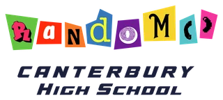

FTC 22331 · Fort Wayne
Canterbury High School
random() · FTC 22331

About
World and event-region maxima are separate metrics. Event-region population is determined by the event's assigned regionCode, not team home state. Frozen source retrieval; values retain source precision in JSON/CSV. Worldwide best comes from Michiana Premier Croft division; Indiana-region best comes from Westfield QT. Michiana Premier is physically in Indiana but assigned region FPE, so it is outside the USIN query.
FTC (FIRST Tech Challenge) uses smaller robots than FRC and its own game; OPR ratings aren’t comparable to FRC’s EPA.
Coming up
Entry lists for 2026–27 events haven’t posted yet. See the full calendar.
People named in public sources (4)
- Clara Satter · Lead programmer
Undated source · Season 2025-26 · School article names her senior and lead programmer after third tournament in South Bend, ahead of March 14 state. It does not call her captain. · Undated school article; 2025–26 season inferred from its named South Bend and March 14 events. · source 1 - Gabi · Team driver; manages engineering notebook; works on team organization and sustainability
Undated source · Season 2025-26 · First name only; duties are self-described in portfolio; not a captain title. · Portfolio version context 2026-03-13 from filename and document metadata; not an established publication date. · source 1 - Ms. Randall · Adult named on team roster; CS/Math/Engineering Educator
Undated source · Season 2025-26 · Exact partial name and occupation retained. Adult roster categorization is a research inference from occupation and placement above student biographies; source does not explicitly call her coach or mentor. · Portfolio version context 2026-03-13 from filename and document metadata; not an established publication date. · source 1 - Mr. Delaney · Adult named on team roster; BAE Systems Engineer
Undated source · Season 2025-26 · Exact partial name and occupation retained. Adult roster categorization is a research inference from occupation and placement above student biographies; source does not explicitly call him coach or mentor. · Portfolio version context 2026-03-13 from filename and document metadata; not an established publication date. · source 1
No public captain found in reviewed team site, 2025-26 portfolio, school award articles or targeted captain searches. Portfolio does not assign coach or mentor titles to its named adults.